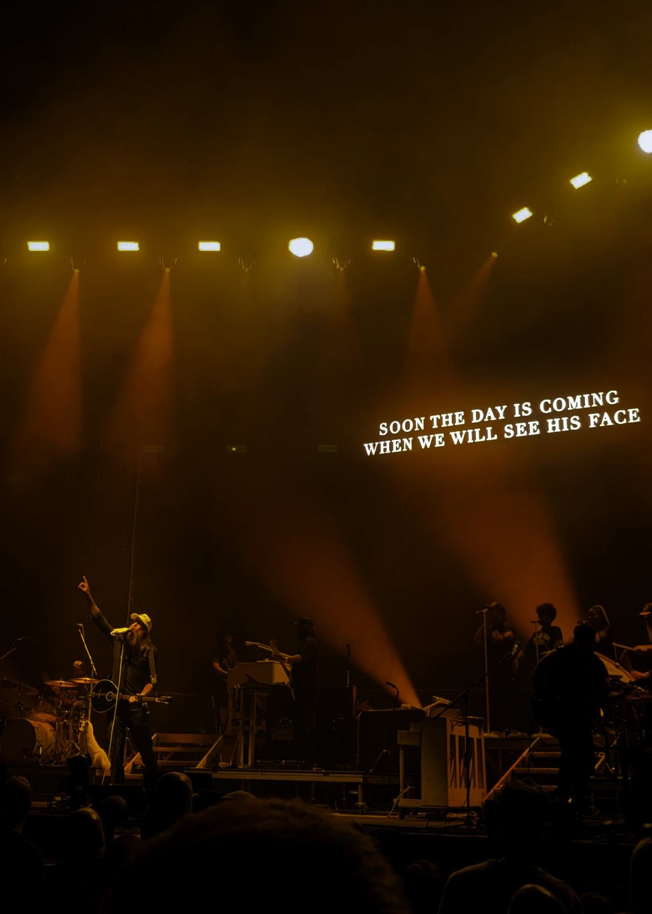
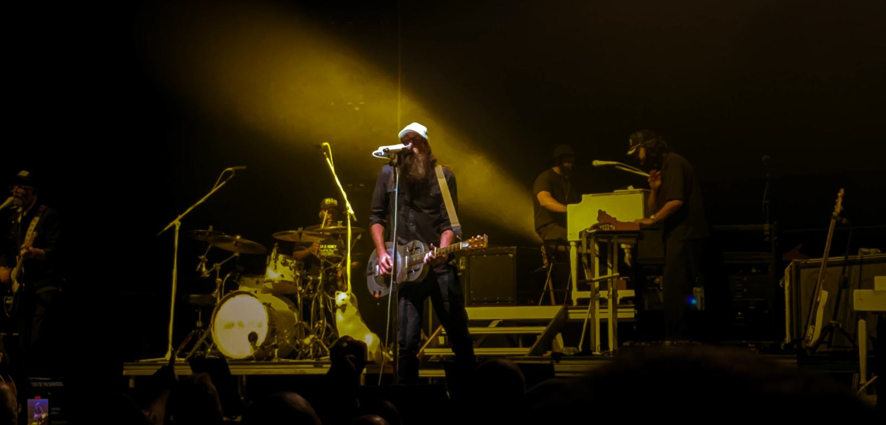
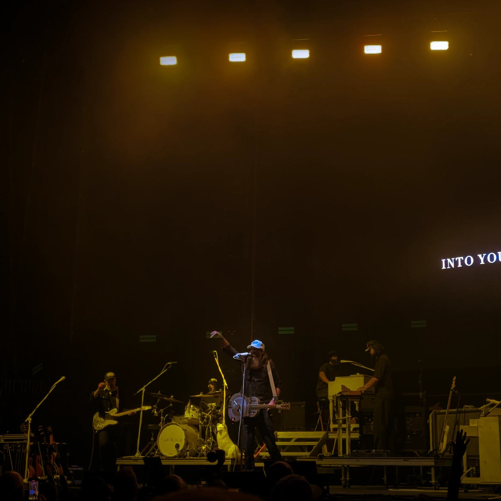
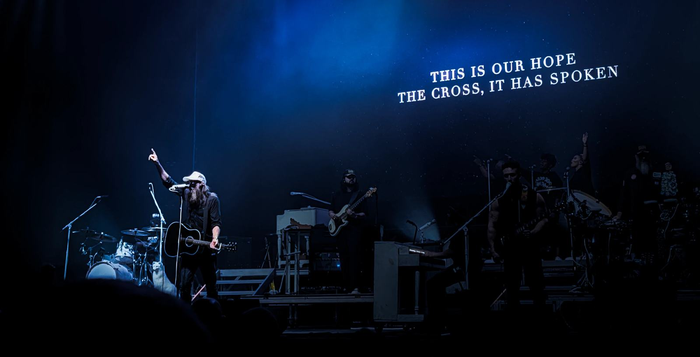
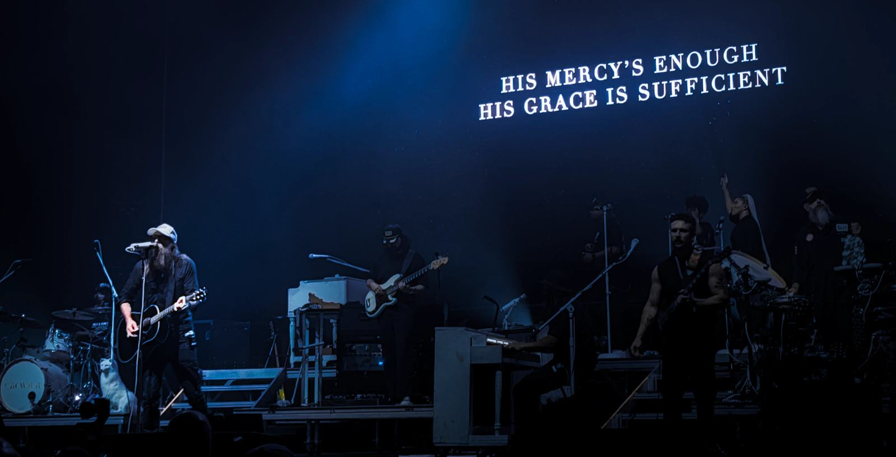

Ficha técnica
ProyectoCrowder Live
ClienteCrowder · concierto
Mi rolFotografía y revelado
Año2026
HerramientasLightroom, Photoshop
fotografías22
atmósferas de luz4
cierreB/N
La serie sigue los cambios de luz del show: ámbar, rojo, azul y un final en blanco y negro.
Las letras proyectadas en pantalla quedan dentro del encuadre y se vuelven parte de la foto.











